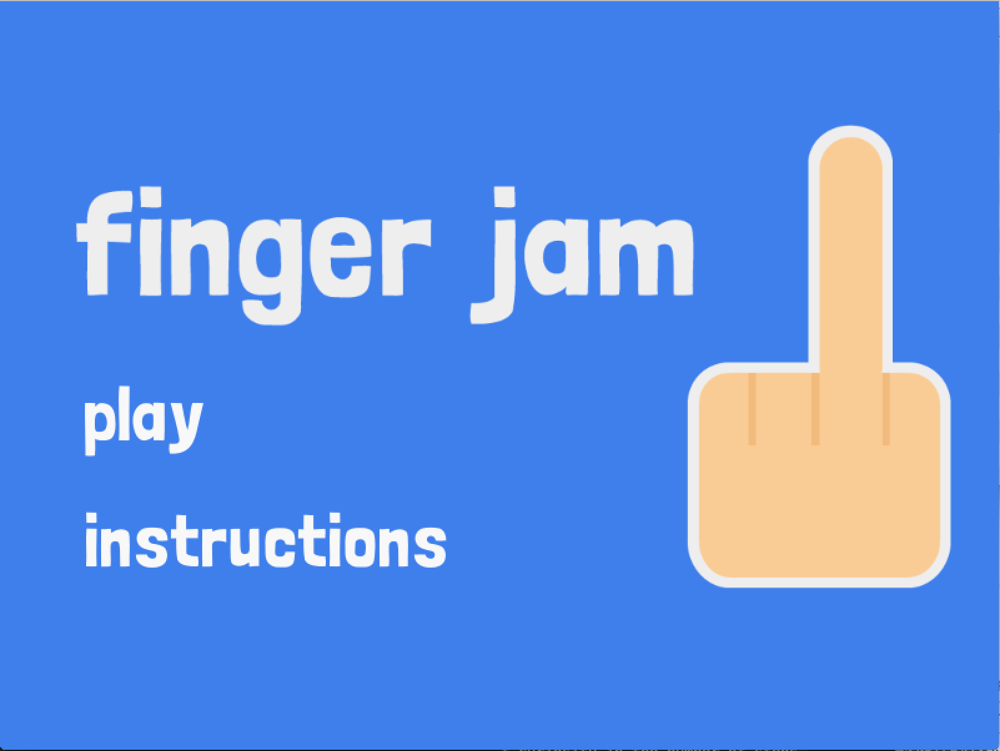

Finger Jam
For the final Game Design (LMC 4725), we were given a theme that we had to design a multi-player game around. Our theme for Finger Jam was humor. Our main inspiration for this game came from Unfair Mario. We wanted to learn more about the interaction between humor and frustration. So, for Finger Jam we put some obvious elements of humor with the music and imagery, but we also added elements that made aspects of the game impossible.
The source code can be viewed here.
